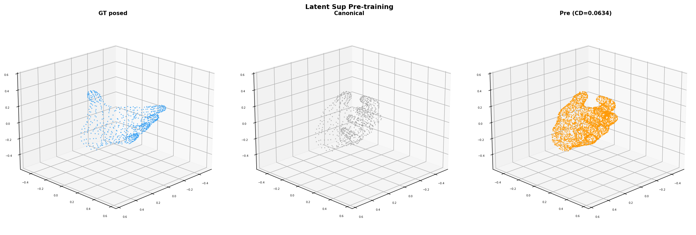
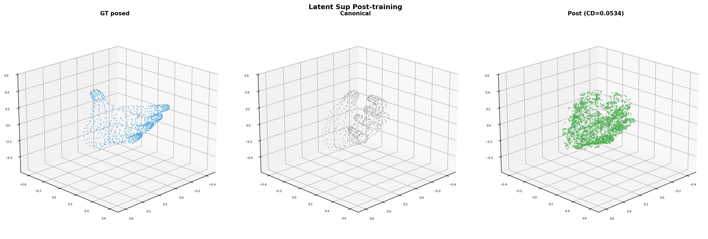
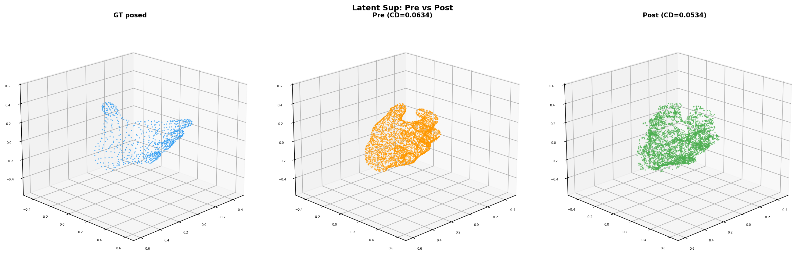

Goal: Improve deformation learning by adding latent feature supervision from the posed mesh’s SLat, alongside mesh-level chamfer loss.
Encode the GT posed mesh (no orient) to get its SLat (401 tokens at 32-dim). During training, compare the pipeline’s refined latent features against the posed SLat features at matching voxel coordinates. This gives the model a direct signal about what the latent representation should look like for the target pose.
canonical SLat (631 tokens) → pipeline → refined feats (631 tokens)
↓
L2 at matched coords against posed SLat (401 tokens)
+
chamfer(decoded_mesh, GT_posed_mesh)
| Metric | Chamfer only (prev) | Chamfer + Latent (new) |
|---|---|---|
| Pre-train CD | 0.0632 | 0.0634 |
| Best CD | 0.0505 (step 40) | 0.0515 (step 30) |
| Post CD (step 100) | 0.0555 | 0.0534 |
| Latent loss | N/A | 58.8 → 11.2 |
| Oscillation | CD rebounds 0.050→0.056 | Stable at ~0.053 |

GT posed (blue), canonical input (gray), pre-train prediction (orange). CD=0.063.

Post-train prediction (green) moves toward GT. CD=0.053.

GT posed (blue), pre (orange, CD=0.063), post (green, CD=0.053). 16% improvement, stable convergence.
Matching refined features against posed SLat at shared voxel coordinates provides effective supervision. The latent loss (58→11) and mesh CD (0.063→0.053) both improve monotonically. Training is more stable than chamfer-only.
With λ=1.0, latent loss is ~4000x larger than mesh loss. The optimization primarily drives feature alignment at matched coordinates, with mesh loss as secondary. Tuning λ or normalizing could better balance the two signals.
Canonical SLat has 631 tokens, posed SLat has 401. Only tokens at matching 16³ bottleneck coordinates get the latent signal. Tokens at canonical-only positions have no posed GT. This limits how much the latent loss can drive deformation at those positions.